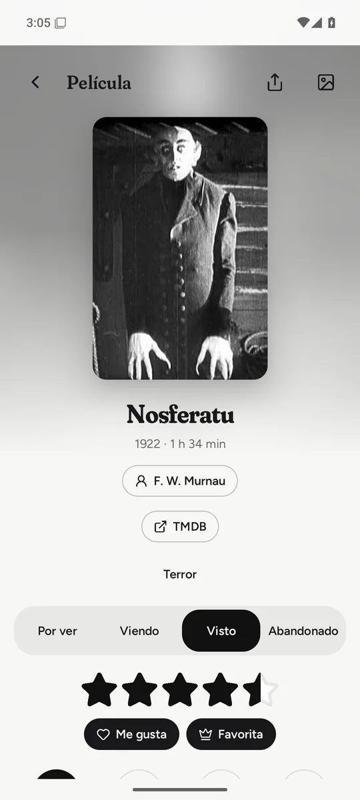
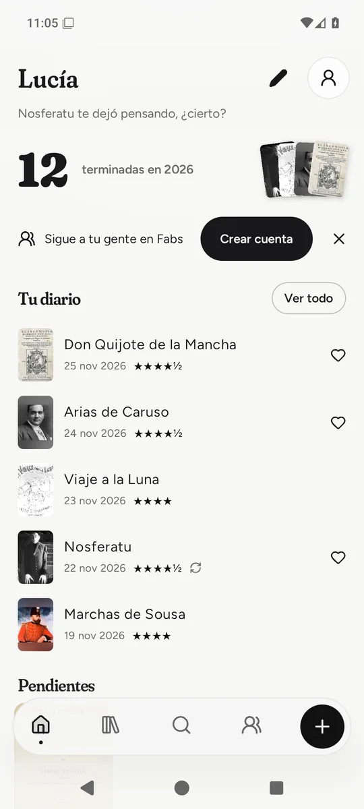
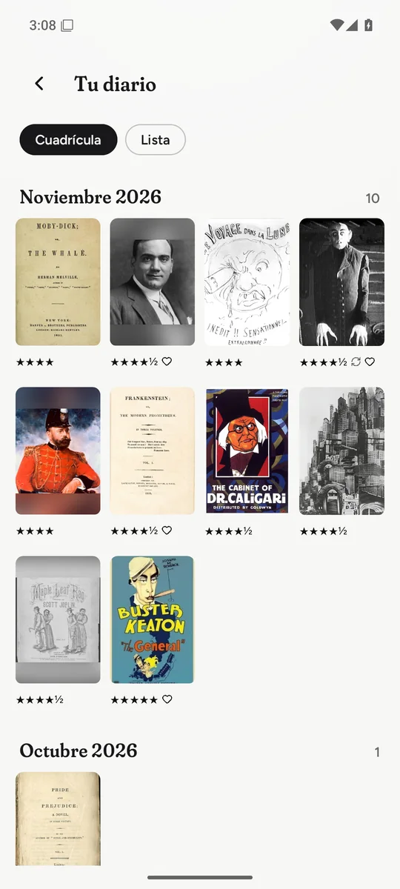
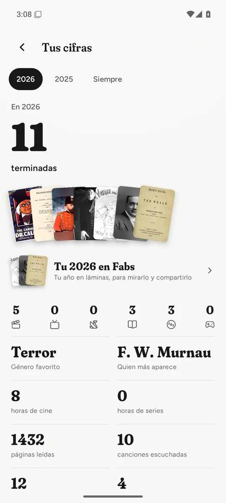
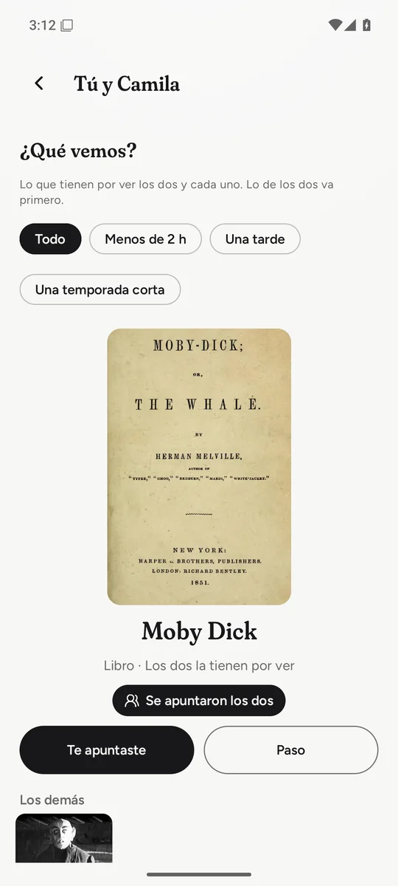
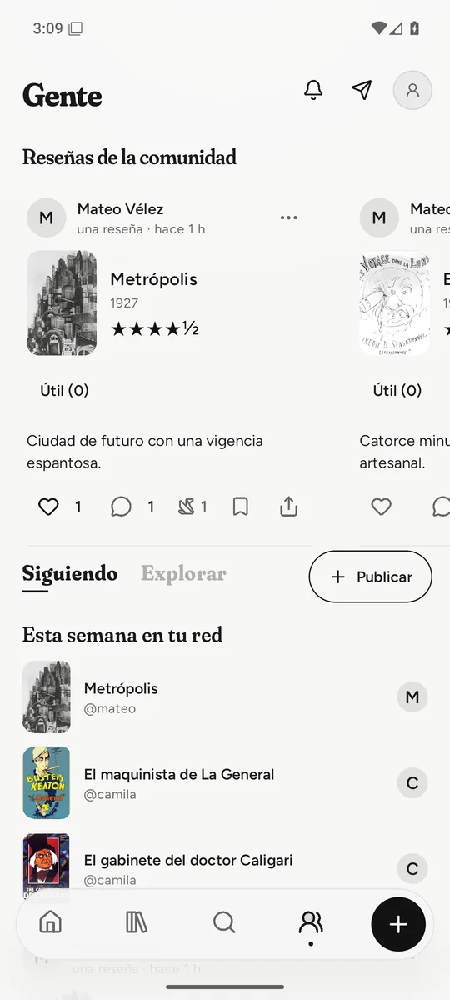
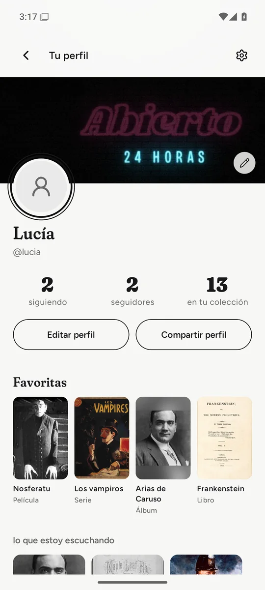

Fabs
Lo que ves, lees, escuchas y juegas, en un solo diario.
Películas, series, animes, libros, música y videojuegos, con tu nota y tus fechas. Sin anuncios y sin suscripciones.
Fabs está en prueba cerrada en Google Play. Entra como tester y la tienes hoy.


Sin anuncios.No vendemos tus datos.Sin suscripciones.Código abierto.
Anota con dos toques.
Pon tu nota y un me gusta. Si lo terminaste hoy, queda en tu diario sin pasos de más.
- Estrellas de media en media, me gusta, favorita y reseña.
- Otra vez: lo que vuelves a ver o a leer cuenta como una vez nueva.
- Elegir varias para anotar una tanda de una sola vez.
Cada obra, con todo lo que importa.
La portada grande sobre su color, el año, el creador, los géneros y la nota del público junto a la tuya.
- Por ver, viendo, visto o abandonado: el estado en una sola fila.
- Cambia la portada por otra o sube la tuya.
- Toca al director, al autor o al artista y abre su perfil con su obra.
Tu diario y tu año, a la vista.
Tus portadas mes a mes, con la nota de cada vez. Y las cifras de tu año: lo que terminaste, horas, páginas, canciones, tu género favorito y quién más aparece.
- Diario en cuadrícula o en lista, como prefieras.
- Tu año en Fabs: un resumen en láminas para mirarlo y compartirlo como imagen.
- Retos del año por tipo de obra.


¿Qué vemos esta noche?
Con alguien a quien sigues y que te sigue, Fabs junta lo que los dos tienen por ver. Filtra por tiempo, «Te apuntaste» o «Paso», y listo.
- Lo que los dos tienen pendiente, primero.
- Menos de 2 horas, una tarde o una temporada corta.
- Por dónde va cada uno y lo que terminaron juntos.

Gente que lee y mira como tú.
Reseñas de la comunidad, lo que pasa esta semana en tu red y publicaciones con fotos. Se lee incluso sin cuenta.
- Crea tu @usuario solo si quieres: sin cuenta, Fabs funciona completa.
- Tú eliges qué es público, qué es para tus seguidores y qué es solo tuyo.
- Chat con las personas que sigues.

Un perfil que se parece a ti.
Tus favoritas, lo que estás viendo, los artistas que escuchas, tus retos y tus insignias. Y arriba, un banner que dice quién eres.
- Escaparates que ordenas a tu gusto.
- Insignias que se ganan con días de verdad, no con clics.
- Una canción en tu perfil.

Banners que se mueven.
Cinco colecciones originales: cine negro, videoclub, biblioteca, vinilo y arcade. Opcionales, para tu perfil.
Todo lo que hace Fabs.
Todo en un lugar
Películas, series, animes, libros, discos, artistas y videojuegos, con portada, año, creador, géneros y sinopsis.
Busca y agrega
Encuentra cualquier obra por su título en español o el original. O agrégala a mano.
Tu nota
Estrellas de media en media, me gusta, reseña, etiquetas y la nota del público al lado de la tuya.
Pendientes y en curso
Por ver, por leer, por escuchar y por jugar; lo que llevas a medias, con la página o el capítulo.
Listas propias
Arma las tuyas y destaca tus cuatro favoritas en el perfil.
Diario
Cada vez que terminas algo, con su fecha y su nota. En cuadrícula o en lista.
Cifras y retos
Lo terminado en el año, horas, páginas, canciones, géneros y creadores, y tus retos.
Tu año en láminas
Lo mejor calificado, tu mes más activo y tu racha, listo para compartir como imagen.
Trae lo que tenías
Importa desde Letterboxd, Goodreads, The StoryGraph, Trakt, TV Time, Netflix y Steam, sin repetir lo que ya tienes.
Juntos
Qué ver con alguien que sigues: lo que los dos tienen por ver y lo que terminaron los dos.
Red opcional
Sigue a otras personas, publica reseñas y fotos, y conversa. Solo se sube lo que marcas.
Tus datos son tuyos
Todo se guarda en tu teléfono. Si quieres, una copia cifrada con tu cuenta de Fogón. Descarga tus datos cuando quieras.
En español e inglés, con tema claro y oscuro. Internet solo se usa para buscar, traer portadas y, si lo activas, para la red y la copia cifrada.
Instala Fabs como tester.
Google pide que una app nueva pase una prueba cerrada: al menos 12 personas que la tengan instalada 14 días seguidos. Solo necesitas un teléfono Android y la cuenta de Google que usas en Play.
- Únete al grupo de testers y pulsa «Unirse al grupo».
- Pulsa «Convertirse en tester» y descarga Fabs desde el enlace a Play que aparece. Puede tardar unos minutos en aparecer.
Usa la misma cuenta de Google en los dos pasos: el grupo es lo que le da acceso a la prueba. Cuéntanos qué te gustó y qué no en el Discord; si quieres, tu nombre va en los créditos.
¿Por qué es gratis?
Porque una app no tendría que cobrarte cada mes, llenarse de anuncios ni vigilar lo que haces. Todo funciona completo sin pagar nada.
Fabs se sostiene con las chispas: banners, marcos y fondos opcionales para tu perfil. Ninguna función se paga.